传统旅游平台商业化过载，比价与广告令人窒息
打开主流在线旅行软件，首先扑面而来的是各种返利券、特惠机票捆绑销售、酒店砍价弹窗。用户只想趁着周五下班找个放松的去处，却被迫在复杂的算法和商业规则中耗费心力。
“我只是想周末去周边散散心，但在软件里看半小时，满屏都是酒店广告和团购，根本找不到真正有用的出行建议。”
在传统在线旅游软件广告冗余与社交平台攻略散乱的两难中，「轻旅」通过“决策信息前置”、“人工智能行程伴侣”与“时钟级结构化时间轴”，为 18~28 岁年轻群体提供极低认知负荷、随时说走就走的周末出行新体验。
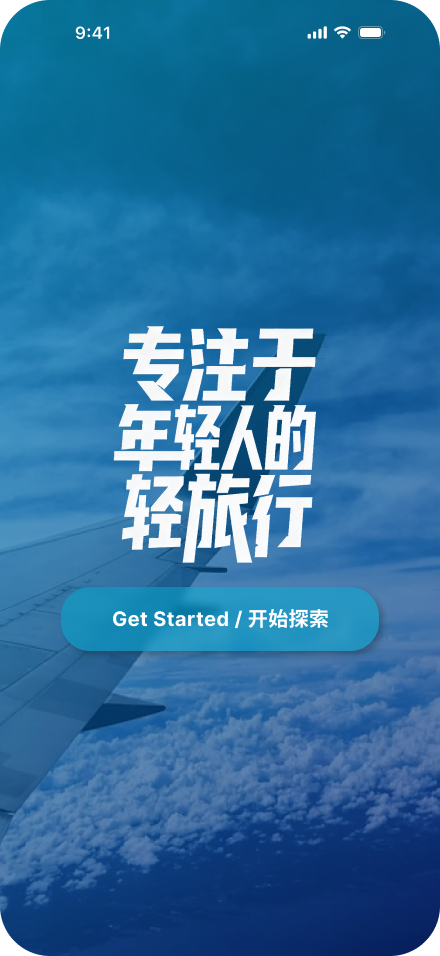
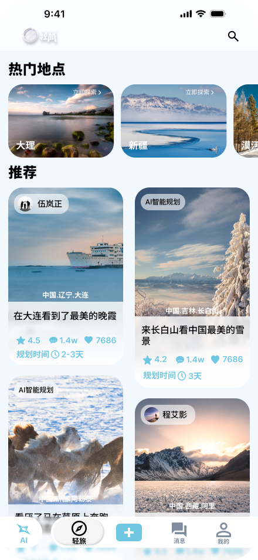
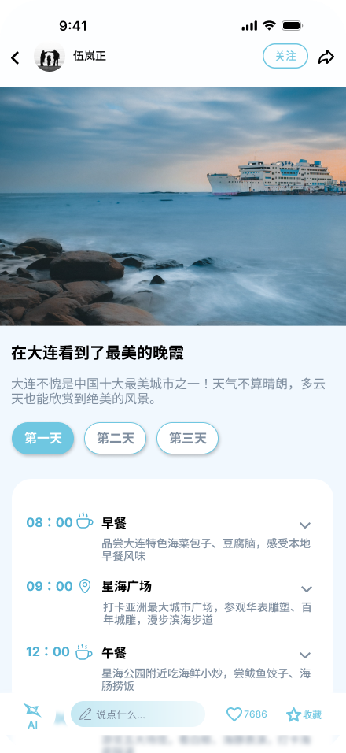
我们针对 18~28 岁年轻群体的出行行为展开分析，发现当代年轻人在周末短途游中，面临着三大普遍存在的核心体验断点。
打开主流在线旅行软件，首先扑面而来的是各种返利券、特惠机票捆绑销售、酒店砍价弹窗。用户只想趁着周五下班找个放松的去处，却被迫在复杂的算法和商业规则中耗费心力。
在主流内容社区中，游记以感性打卡照片和情绪化文字为主。一篇 2000 字的长文中往往夹杂大量个人自拍，用户必须逐篇比对 10 篇以上的攻略，才能拼凑出“究竟适合玩几天、每天先去哪再去哪”。
多数用户自行整理的备忘录清单只罗列了地名，缺少合理的时间节奏规划。抵达现场后，经常因为景点排队、交通接驳延误导致全天计划打乱，反复查找地图反而破坏了游玩心情。
| 用户真实困境 | 传统处理方式的弊端 | 「轻旅」的设计应对策略 |
|---|---|---|
| 不知道去哪、玩几天 | 低效 用户需逐个点击封面进入内文，翻找作者玩了几天。 | 突破 决策标签前置：在首页卡片直接透出“规划时间 2-3天”与“AI智能规划”，在列表中即可完成时间匹配。 |
| 搜集整合攻略耗时漫长 | 耗时 手动在多个平台比对，花费数小时制作繁杂的文档。 | 突破 智能行程伴侣：基于自然语言一键生成（如“杭州3天学生平价游”），秒级输出包含餐饮与景点的结构化骨架。 |
| 现场执行无时间节奏 | 慌乱 仅有景点打卡清单，缺少明确的时间先后顺序与用餐预案。 | 突破 时钟时间轴系统：以 08:00、09:00、12:00 绝对时钟为锚点，配备餐饮、景点语义图标与避坑贴士折叠卡。 |
我们将传统旅行漫长无序的十几道工序，凝练为五步核心用户动线，形成高效率的闭环体验。
通过首屏双列瀑布流与热门横滑卡，直接获知目的地所需天数与风格，快速激发出行兴趣。
首页 / 热门地点告诉智能助理出行需求与预算限制，系统即时生成适配年轻人体力的定制化方案。
底栏常驻 AI 入口进入卡片详情页，通过切换第一天、第二天、第三天，浏览时钟时段安排并按需微调。
卡片详情页 / 时段折叠旅途中无缝查阅下一步行动：几点在何处吃早餐、何处乘车、景点避坑贴士，告别慌乱。
我的行程 / 离线清单旅途结束后，可选择“发布笔记”分享照片，或将行程直接转为“公开模版”回馈同好。
发布中心 / 个人中心在深入微观设计决策前，先俯瞰「轻旅」移动端产品的全套 12 帧界面布局。从灵感发现、AI 对话定制、时间轴执行到双轨发布与个人资产管理，构成严密闭环。点击任意卡片可开启沉浸式高保真灯箱（支持键盘方向键与 ESC 键）。
前置“规划时间 2-3天”与“AI智能规划”标签，首页即完成时间匹配
08:00 / 09:00 / 12:00 绝对时段与语义图标清单，直达现场执行
翱翔机翼与醒目排版确立心智，传递轻盈纯净的“轻旅行”哲学
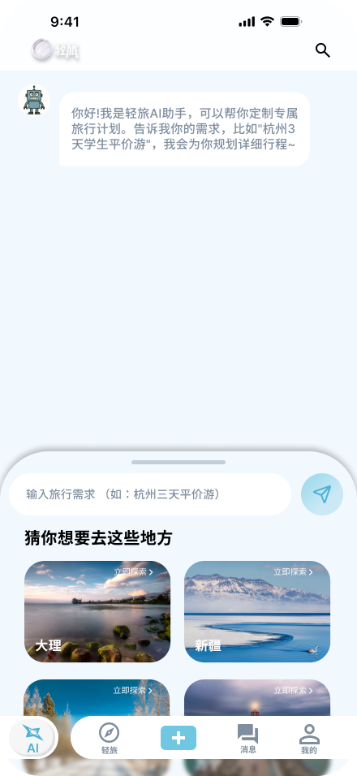
常驻底栏入口，灵感抽屉与场景提示词降低新用户构思门槛
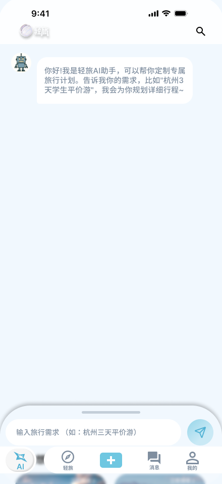
抽屉收起后的纯粹对话态，留足垂直空间，专注于方案生成与微调
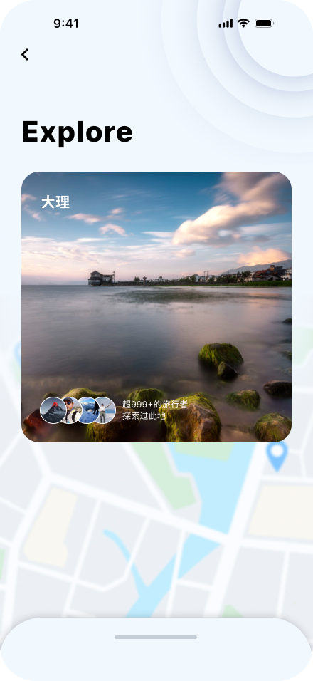
轻量底图与“超999+旅行者”信任背书，打造具象化同温层认同
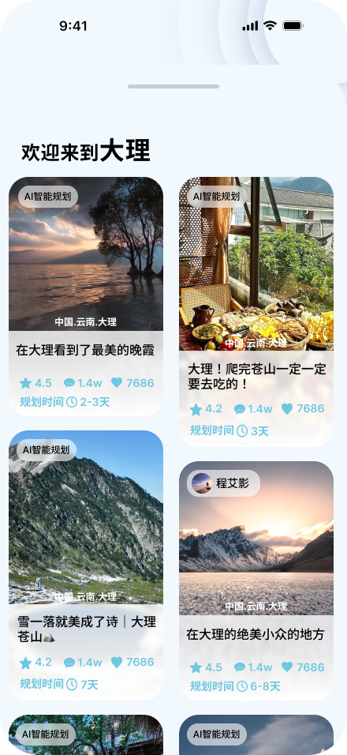
抽屉拉起后的城市垂直精选瀑布流，支持多路线高效比对与决策
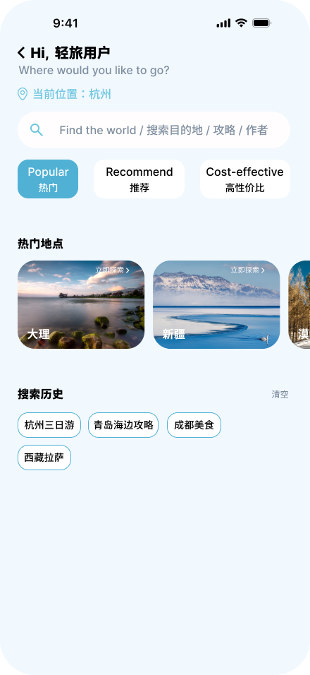
当前城市定位识别，热门、推荐与高性价比三大核心决策维度筛选
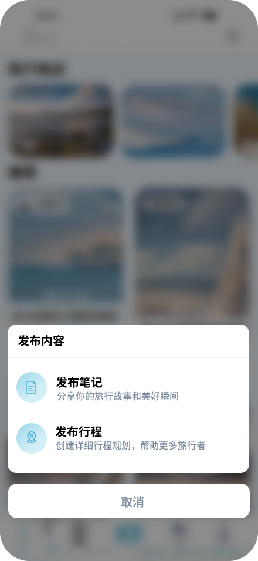
清晰分离“发布笔记”与“发布行程”，沉淀高复用性结构化模版
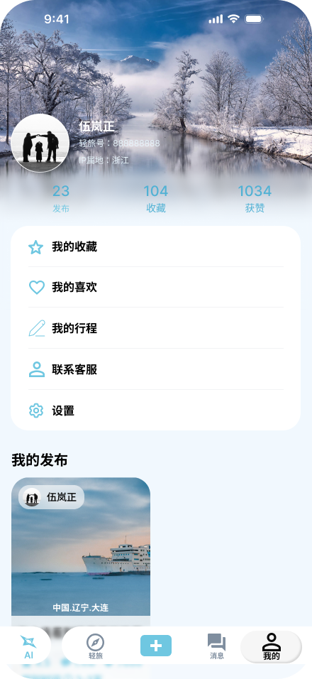
以宁静雪景为情绪背书，行程、收藏与足迹结构化管理与归档
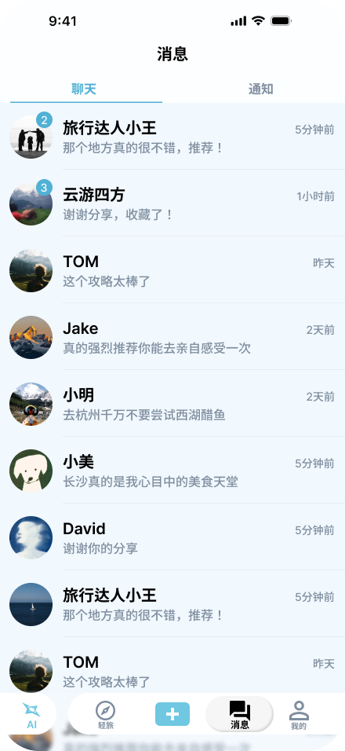
聊天与通知分段清晰，满足出行搭子沟通与旅途动态反馈
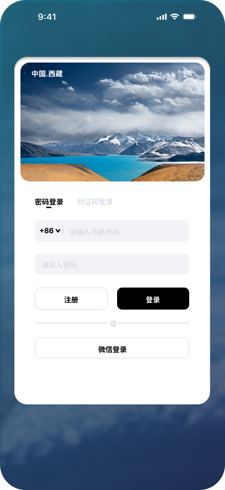
悬浮于自然风景之上的微距投影白卡，将首次认证阻力降至最低
不堆砌无意义的装饰，每一个组件、每一个标签的出现，都基于严谨的用户体验决策。
传统图文详情页是“文章思维”，用户在现场必须反复上下滑动寻找地址与时间；「轻旅」详情页彻底重塑为“行动清单思维”。
相较于模糊的“游玩2小时”，绝对时钟为年轻人提供了清晰的生活节律感，尤其方便将餐饮与景区营业时间精准咬合。
使用咖啡杯（早餐）、定位针（地标景点）、刀叉（午晚餐），无需细读字句，用余光扫视即知下一站活动属性。
告别无休止的长图滚动，单日行程各自聚合，降低单屏信息负载，加载轻盈流畅。
我们拒绝做“问答百科型”的无边际聊天机器人，而是为出行规划量身定制交互界面，让 AI 真正接管繁重的排期工作。
在输入区预设“杭州3天学生平价游”、“大理慢生活4日游”等典型高频诉求，降低新用户构思门槛。
AI 不输出动辄几千字的文本墙，而是输出可直接加入“我的行程”、可逐项微调的时间轴卡片。
设计了初始页推荐抽屉与对话聚焦态，保证用户既能在前期获得探索灵感，又能在对话中专注交互。
我们改变了社区内容在传统平台的展现方式，让信息密度与浏览效率达到最佳平衡。
将最重要的时间决策信息直接印刷在封面卡片底部，用户无需盲目点开长文，浏览效率提升数倍。
诚实透明地标注算法生成与真实同好路线，为追求极致效率与追求人文温度的用户提供自主选择权。
底层分流“图文感性打卡”与“理性结构化模版”，保障行程库的高复用性与纯净度。
严格继承原移动端产品的视觉基因，并转译为规范的现代 Web 设计变量系统。
| 前景色 / 背景色 | 对比比率 | 合规标准 |
|---|---|---|
| 深空黑 #0F172A / 纯白 #FFF | 16.2 : 1 | AAA 级达标 |
| 次级玄灰 #334155 / 纯白 #FFF | 9.8 : 1 | AAA 级达标 |
| 品牌主色 #1B93C4 / 纯白 #FFF | 4.7 : 1 | AA 级达标 |
| 反色白字 #FFF / 主色 #1B93C4 | 4.7 : 1 | AA 级达标 |
严格规避过浅的灰色占位符，全页面文本元素与交互按钮均满足无障碍阅读标准。
真实的设计从来不是空中楼阁，而是在多种约束下做出最合理的权衡取舍。
1. 为什么不把地图做满整个首屏？
许多旅行类应用喜欢将全屏地图作为首页背景。但我们发现，年轻人在前期灵感阶段，迫切需要的是高密度的视觉冲击与目的地氛围（如雪山、落日、海边），而非冰冷的道路网格。因此我们坚持将大图瀑布流作为首要载体，仅在明确锁定城市时调用轻量地图底图。
2. 为什么坚持采用时钟绝对时间（08:00）而非相对时长（“游览2小时”）？
相对时长在实验室推演中很理想，但在真实出游中极易失效——年轻人的起床时间、用餐排队时长具有强波动性。绝对时钟给用户提供了一个明确的“时间锚点”，哪怕起晚了，也能清晰知道从哪个节点开始衔接。
1. 弱网与无网环境下的离线时间轴同步：
在高原、雪山或海岛等信号较弱区域，如何通过前端 Service Worker 与 LocalStorage 预先缓存完整的图文离线包，确保在没有移动网络的情况下依然能流畅查看打卡清单。
2. 结伴出行的多人协同编辑与投票冲突解决：
针对年轻人喜爱的“旅行搭子”场景，探索多人实时共享日程、对备选景点发起一键轻量投票（去/不去）的交互组件设计。
3. 异常天气与闭园的动态行程自愈：
结合实时天气接口，当大风导致跨海索道临时停运时，AI 能够主动弹出备用室内方案并重新计算时间差。
这个作品集网站没有伪造任何诸如“上线后留存提升 45%”、“DAU 突破千万”的虚假商业数据，因为我们深知，一名优秀的体验设计师与前端工程师，其核心说服力在于对真实人性的体察、对复杂业务的解构、对设计决策的克制，以及对工程实现的高标准严谨追求。
从 Figma 画板中的 12 帧静态画面，到如今这个信息层级严密、交互丝滑、语义化标准、全设备响应式的真实在线网页，我始终贯彻“所见即所得、所思皆有由”的专业准则。期待能与追求卓越体验的团队并肩协作，打造真正触动人心的好产品。